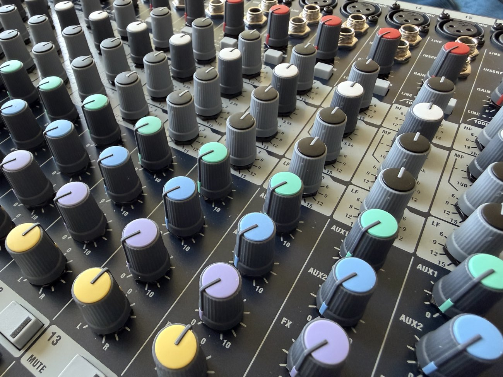
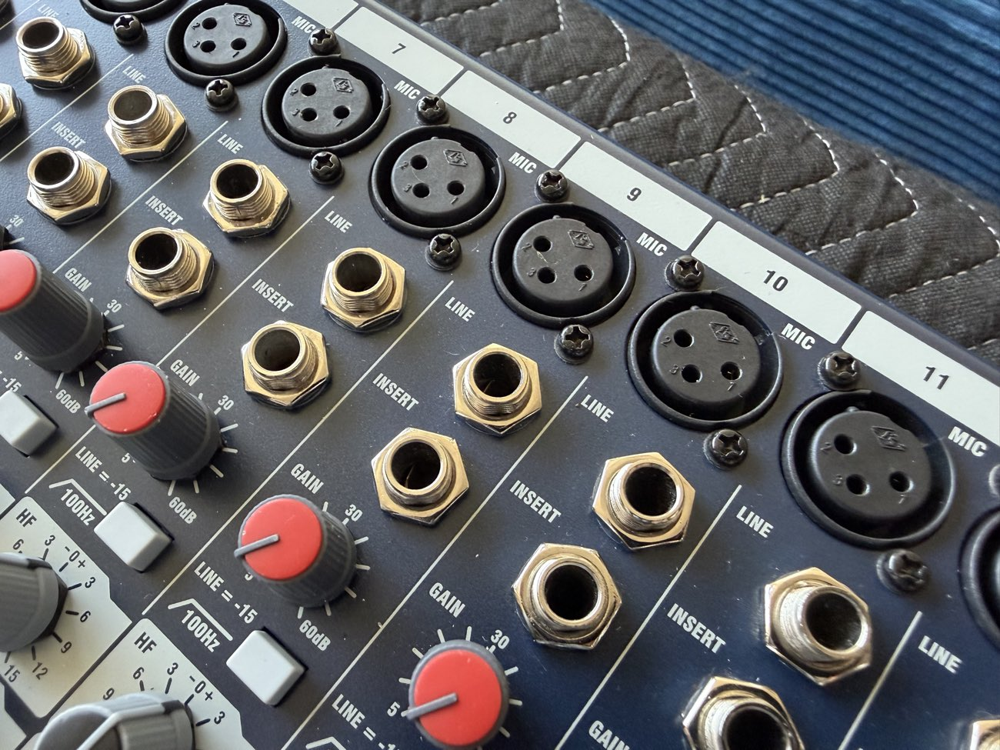
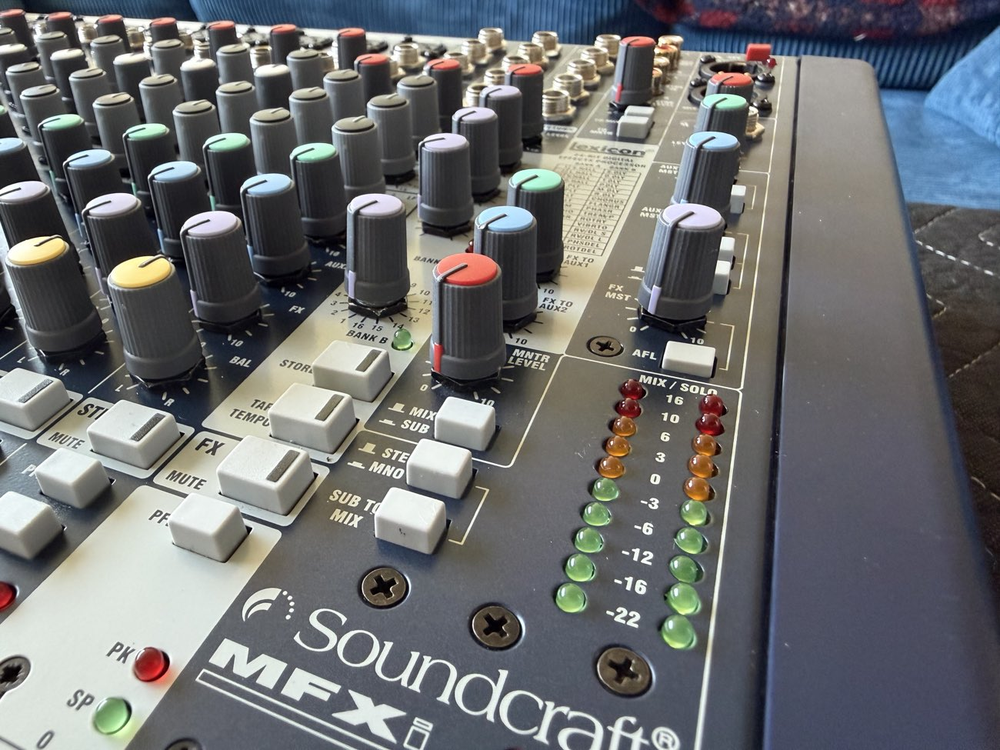
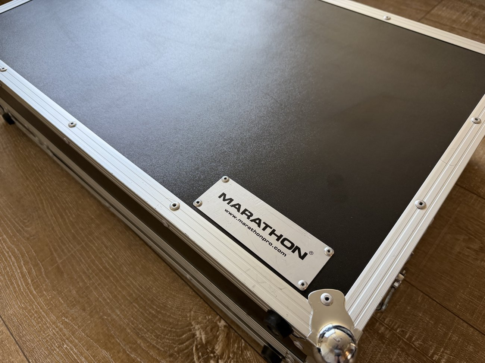

Soundboard Sale
The Playhouse's Soundcraft MFXi 20/2 console and its Marathon Pro flight case, offered to a small community school nearby. Everything the board needs in order to name a number is on this page: what the gear is, what condition it is in, what it cost new, and what the research says it is worth.
This page does not recommend a price.
It presents the valuation work as it was produced, including the parts that do not agree with each other. Setting the number is the board's call. Come to the meeting with a figure and a reason.
What is on the table
Two items, sold together or separately. The research argues they are worth more as a pair; the board decides whether they leave together.
20-channel analog console. 20 mono mic inputs plus 2 stereo line channels, GB30 preamps, built-in 24-bit Lexicon effects, 2 subgroups, 2 aux sends. Made in England. Discontinued.
Split-lid road case sized to the console. Aluminum frame, foam-lined both halves, butterfly latches, steel ball corners, wheels. IEC power cable stored in the lid.
The unit
Read off the rear label and the manufacturer's own documentation.
| Model | Soundcraft MFXi 20/2 |
| Part number | RW5783 (US-market SKU RW5783US) |
| Serial number | 30190106 |
| Origin | Made in England — Soundcraft's Potters Bar factory, Hertfordshire. Later Soundcraft compact-series gear moved to Chinese production. |
| Manufactured | Between 2008 and 2015. The RoHS mark on the label puts it at 2006 or later; the MFXi production run was roughly 2008–2015. |
| Power | Universal internal supply — no external brick, runs on any mains voltage. |
| Notable | GB30 mic preamps, the same preamp fitted to the larger LX7ii and GB series. Lexicon FX section runs the AudioDNA processor, the same silicon as the Lexicon MX400. |
Condition
The console came out of the case carrying years of gaffer tape and label residue across the fader strip and the rear panel. That has been cleaned off. The faders and pots underneath are unworn — no scratch grooves in the fader travel, no discoloration on the pot shafts.


{kind=link}

{kind=link}

{kind=link}

The flight case
Good condition. Cosmetic scuffing on the badge plate and the extrusion edges, nothing structural. The lid separates so the console can be operated while it sits in the base.


{kind=link}

What it cost new
The console is discontinued. Sweetwater and zZounds both list it as no longer available; the pricing below is recovered from the retailer pages that are still up for reference.
| Item | List | Street |
|---|---|---|
| Soundcraft MFXi 20/2 | $799.00 | $639.20 |
| Marathon Pro case | — | $300 – $380 |
| Package, new | — | ~$950 – $1,020 |
Realistic original purchase, through a dealer and before tax: $640 – $700 for the console. The case figure is a current replacement cost, not a historic one — comparable Marathon mixer cases with wheels run $299 – $309 today.
Value by age
We do not have a receipt, so we do not know the year the Playhouse bought it. This is the general depreciation model for analog consoles, applied to the $639 street price. Find the row that matches when you think we bought it.
| Age at sale | Retained | Value on $639 |
|---|---|---|
| Year 1–2 | 65–75% | $420 – $480 |
| Year 3–5 | ~50% | ~$320 |
| Year 6–10 | 35–40% | $220 – $260 |
| Year 10+This one | 30–45% (floor) | $200 – $290 |
The mechanic behind the table: analog consoles fall steeply for five to seven years and then stop. They do not trend toward zero the way digital gear does, because there is no firmware, no operating system and no control-surface protocol to go obsolete. Where the floor sits is set by channel count and preamp reputation — the GB30 pedigree is what holds this one up.
The market read
Separately from the age model, the research put a figure on what this specific unit — restored, flight-cased, 20 channels of GB30 — would fetch from the right buyer today.
| Item | New | Today |
|---|---|---|
| Soundcraft MFXi 20/2 | ~$640 street | $350 – $500 |
| Marathon Pro case | $300 – $380 | $150 – $225 |
| Package | ~$950 – $1,020 | $500 – $700 |
Pushing value up
- Restored condition. No scratchpad wear on the fader travel, no discoloration on the pot shafts.
- Flight-cased its whole life. Climate and impact protection, minimal handling damage.
- 20 channels of GB30 preamps — the single strongest value-retention factor on the unit.
- Made in England, from Soundcraft's own factory rather than the later Chinese production.
- Clean examples are uncommon. The surviving population is mostly beaten-up church, school and community-theater boards.
Pushing value down
- The analog market is soft. A Behringer XR18 digital mixer is $509 new; an X32 Rack is $699; an X32 Producer is $580.
- Anyone equipping a working rig today buys digital. The buyer for this board specifically wants analog.
- Thin transaction volume. Reverb's price guide for this model returned no sold-transaction data at all.
- Slow sale on the open market — 30 to 90 days is the realistic expectation.
Confidence: moderate. The absence of sold data on Reverb is itself informative — it tells us the model trades rarely, not that it trades cheaply. The comparables that were found: a non-functional MFXi listed for parts at EUR 219 on eBay Germany, an active US listing with no captured price, and a general used-Soundcraft band running $225–$1,369 across all models and conditions.
Selling to the school changes the math
The valuation above was written for an open-market listing on Reverb or eBay. A direct local sale to a nearby community school is a different transaction, and mostly a better one.
What the board decides
Three open questions. None of them are answered on this page.
Where the numbers came from
- Musician's Friend product page — embedded pricing data showing $639.20 street, $799.00 list, marked discontinued.
- Sweetwater and zZounds — model pages retained for reference, both marked no longer available.
- Soundcraft's own MFX and MFXi product documentation — specifications, GB30 preamp lineage, MFXi/MPMi differences.
- B&H Photo — MFXi 20/2 listing confirming part number RW5783US.
- Reverb — canonical product entry exists and tags the era as "2010s," but the price guide returned no sold-transaction data.
- eBay — Marathon case pricing ($299–$309 new), the general used-Soundcraft range, and the EUR 219 parts-unit listing.
- NSP Cases and Thomann — Soundcraft-specific flight case pricing for comparison (MFXi 12 case at £258; Ghost 24 case at £327).
- The rear label on the unit itself — model, part number, serial, country of origin and compliance marks.